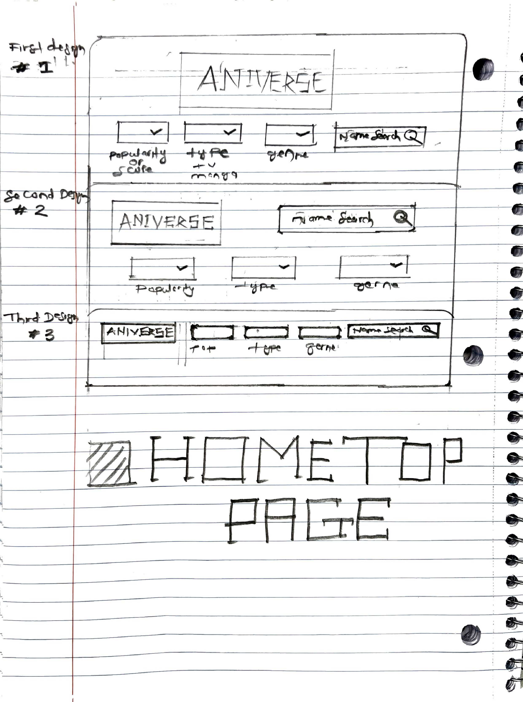
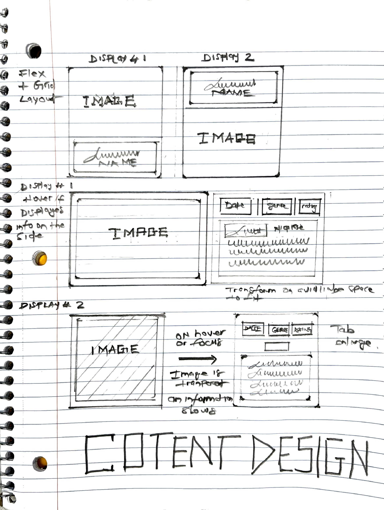

Original Design Source
Sketches
 Resources
Project Goal
The goal of my website is to create a great anime/manga search site using Jikan API to help my user find exciting shows and mangas. I also want showcase my skillset to future employers for my portfolio too. This website incorporates responsive design and interactive elements to engage viewers and highlight key projects effectively.
Additional Notes
Implementing a hover effect for revealing additional information on content cards was an exciting challenge. Another focus was maintaining a responsive layout using Flexbox to ensure optimal viewing on all devices.
By addressing these challenges, the final website not only showcases my technical skills but also provides a user-friendly and visually engaging experience.
Challenges & Learnings
One of the biggest challenges was ensuring the pagination for the website. Another difficulty was implementing the hover-based content details box, which required careful planning of positioning and transition.